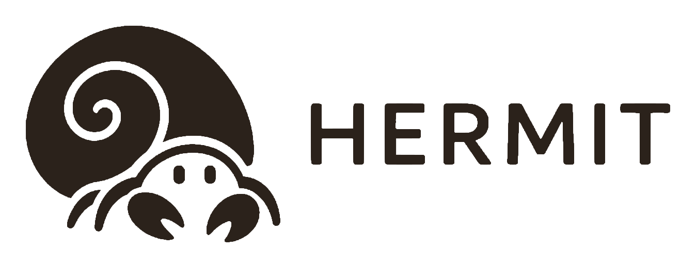
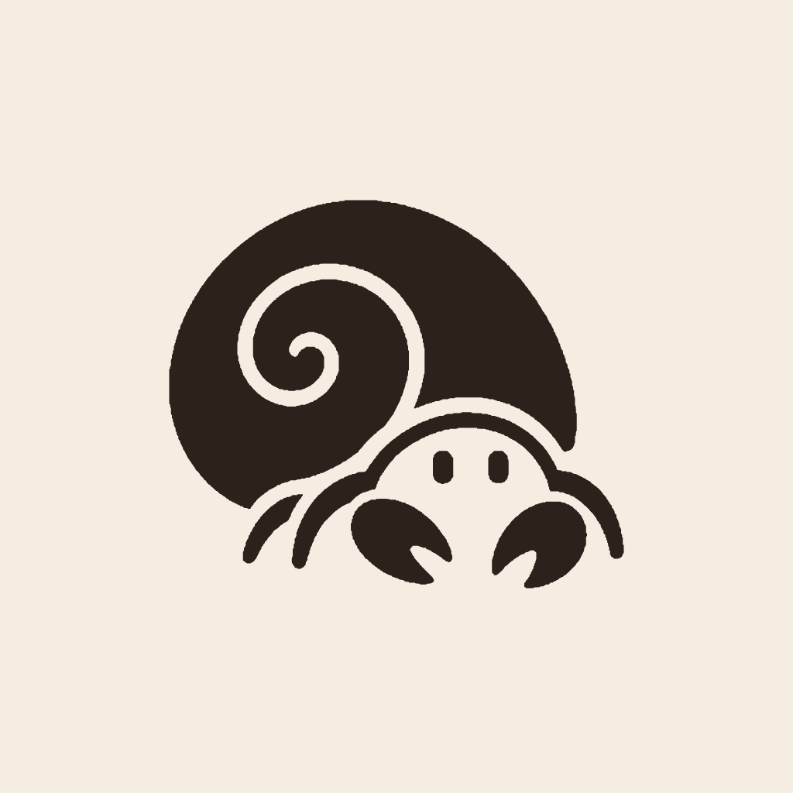
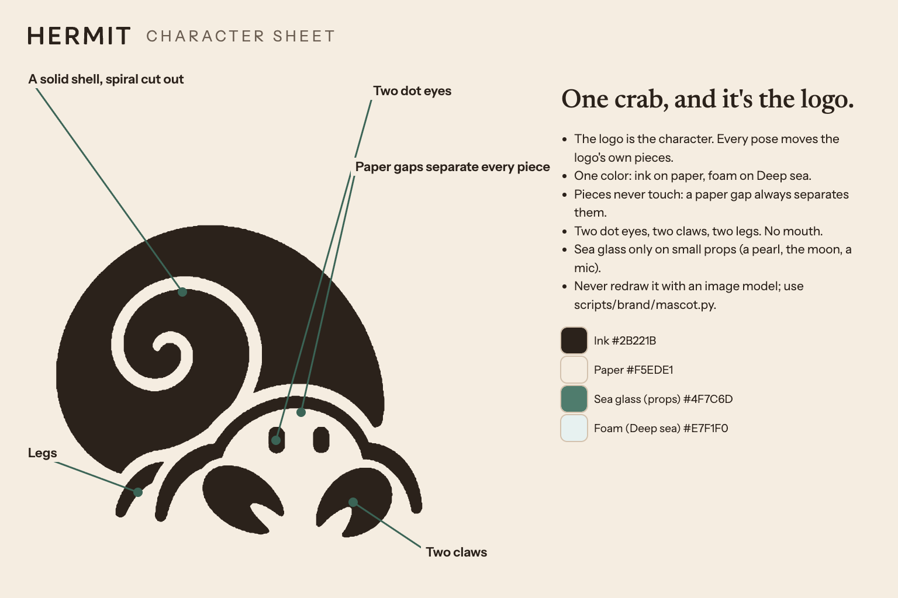
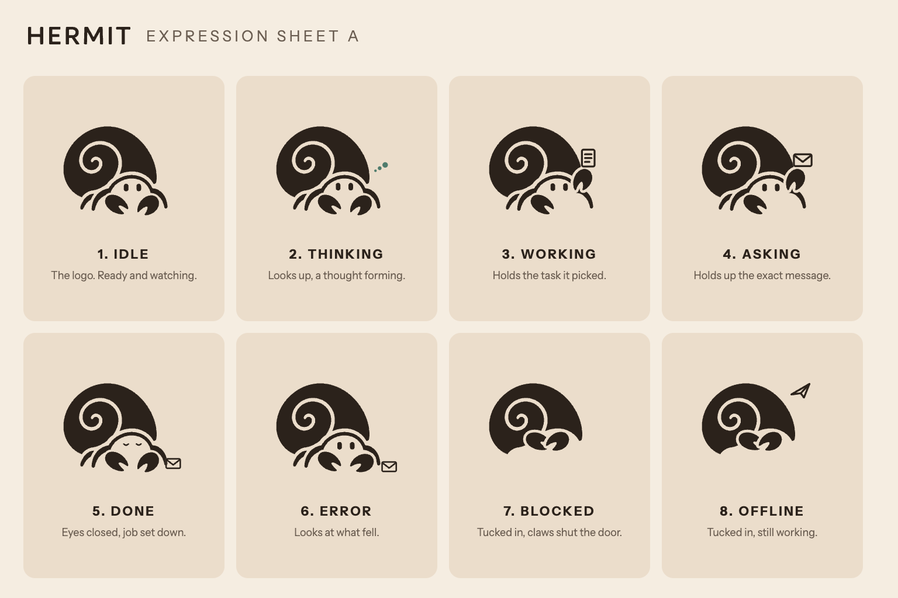
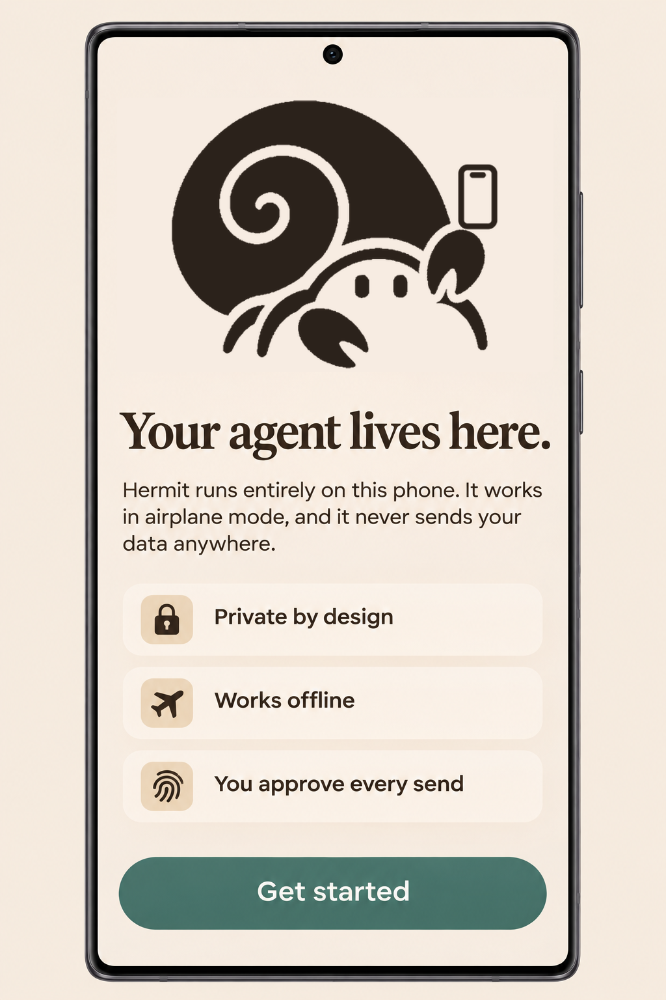
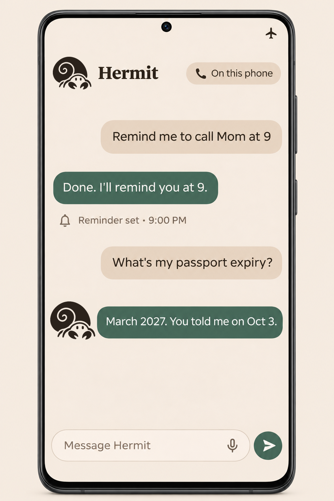
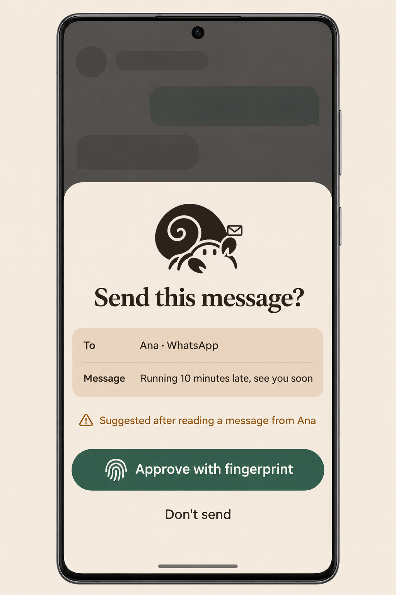

The idea
Hermit is a personal AI agent that does what the cloud agents do, except the brain runs on your own phone. It works in airplane mode. When a task needs the internet, Hermit's own model decides, and you approve anything that leaves.
The brand is one metaphor carried all the way through. A hermit crab carries its home on its back and keeps to itself. Its shell is a private home: that's the phone, and the safety cage around every action. When it needs more room, it moves into a bigger shell: that's Boost, pairing a computer you own. Changing phones is changing shells. Nothing is left behind.
Hermit never molts, sheds or grows a new body. That language belongs to other crustaceans. Hermit only swaps shells.
Voice
Hermit sounds like a discreet, capable friend who happens to be very good at errands. It says little, says it plainly, and never makes a show of what it knows about you.
Personality
Discreet: it keeps its door shut. Capable: proud of tidy, finished work, never a pet. Dry: a raised eye stalk, not a joke. Loyal homebody: attached to your phone. Principled: when the cage says no, it says no calmly and explains why.
How Hermit talks
Say
- "Done. I'll remind you at 9."
- "Send this to Ana? Here's exactly what goes out."
- "I didn't send it: that number isn't in your contacts."
- "Forgotten. It's gone from this phone."
- "Works on this phone. Nothing leaves it."
Don't say
- "Oops! Something went wrong 😅"
- "I'm so sorry, I can't do that."
- "Your data is safe with us." (There is no us. It's your phone.)
- "Molting", "shedding", "new shell, same crab"
- "Powered by AI", "smart", "magic"
Honest exceptions
The privacy promise is literal, so its exceptions are stated plainly wherever they apply: a WhatsApp reply is sent by WhatsApp itself, calendar events sync wherever your calendar already syncs, and the model downloads once. Hermit itself sends nothing.
Logo
A hermit crab peeking out of its shell: a solid shell with the spiral cut out, a domed head with two dot eyes, two claws and two legs, all in one color and separated by thin paper gaps. The source is the reference drawing (logo/source/reference-drawing.png), traced into clean vector by scripts/brand/logo_from_trace.py. The mascot is the same crab, built from the same pieces.

Sizes
The symbol holds up down to 24 pixels. Below that, use the app icon instead of the bare symbol.

Signature
Everywhere Hermit credits itself (the README, the website footer, the app's About screen) it uses the same line and the same three logos: "Hermit, built by Dojo Coding (dojocoding.io). Powered by QVAC (qvac.tether.io) from Tether (tether.io)." followed by "Hermit is an independent project, not affiliated with or endorsed by Tether." On light surfaces, QVAC and Tether appear in ink; on dark surfaces, in their original colors. See the footer of this page.
Don't

Color
Quiet craft is the master palette: paper, ink and one sea-glass accent. Color carries meaning in the interface: sea glass is Hermit, amber means it needs your approval, coral means the cage blocked something. Contrast ratios are measured against paper. Tokens live in tokens.json.
Type
Three open-license families, self-hosted so nothing calls home just to render a letter.
The character
The crab is Hermit, and Hermit is the face of the brand. It's an accurate hermit crab, simplified: a spiral shell on its back, two eye stalks, two antennae, a big claw and a small one, and four jointed walking legs. It's drawn from one exact vector rig, so every pose has the same anatomy. It has no mouth. Emotion comes from the eyes, the claws and what it's holding. When the cage blocks something, it pulls into its shell and the big claw closes the door, which is exactly what real hermit crabs do.
The character never replaces text. Every state it shows is also written down, and Quiet mode turns it off entirely.



Rules
| Always | Never |
|---|---|
| Two eyes, two antennae, two claws, four legs | Extra or missing parts |
| Ink shell, sea-glass spiral, sand crab | Red, orange or coral |
| Flat, one line weight, matte | 3D, plush, gradients, pixel art as the main style |
| Drawn from the rig (scripts/brand/mascot.py) | Redrawn by an image model |
| Swapping shells | Molting, shedding, growing |
| Calm and grown-up | Baby-cute, blushing, crying, hearts |
Interface
Talk first, tap if you need to. The conversation is the interface, and screens are the fallback for what's easier to see than say: what's about to be sent, what Hermit remembers, what it did.
Three rules hold everywhere. The approval sheet shows the exact action, written by the app, never by the model. Anything that leaves the phone needs your fingerprint. The Activity log proves what happened, with a signed chain you can verify.


